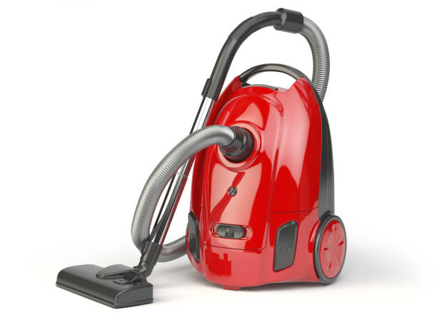
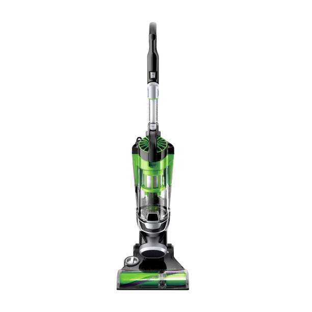

Red Bull
Advantages:: Red Bull vacuums are incredibly portable and ideal for spot cleaning. They are perfect for reaching tight spaces, cars, and upholstery.
Best for: Quick spills, car cleaning, and small messes..
Green Latent
 Advantages: Green Latent cleaners are known for their powerful suction and wide cleaning paths. They are great for deep cleaning carpets and large areas.
Best for: Homes with predominantly carpeted floors.
Disc Jumbo

Advantages: Disc Jumbo offer the freedom of movement without being tethered to an electrical outlet. They are lightweight and versatile.
Best for: Quick clean-ups and homes with multiple floors.
exclusive 50% off for above products ,visit our stores!!